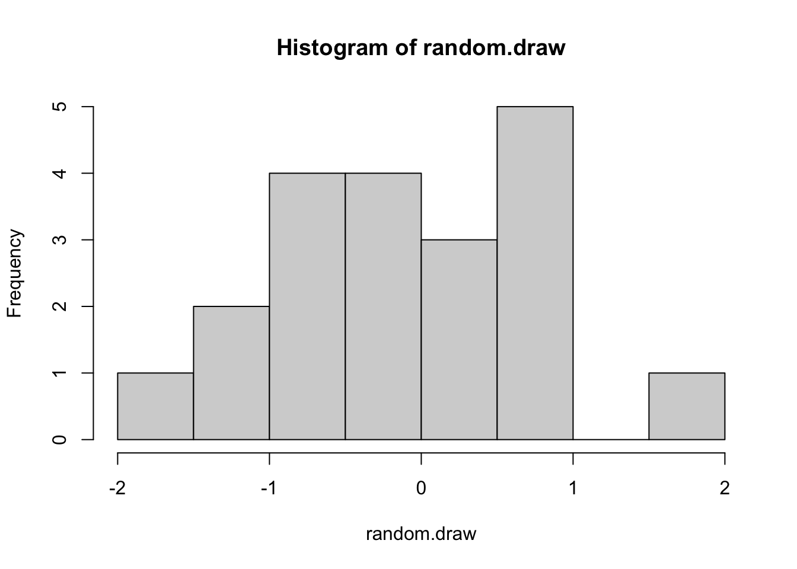
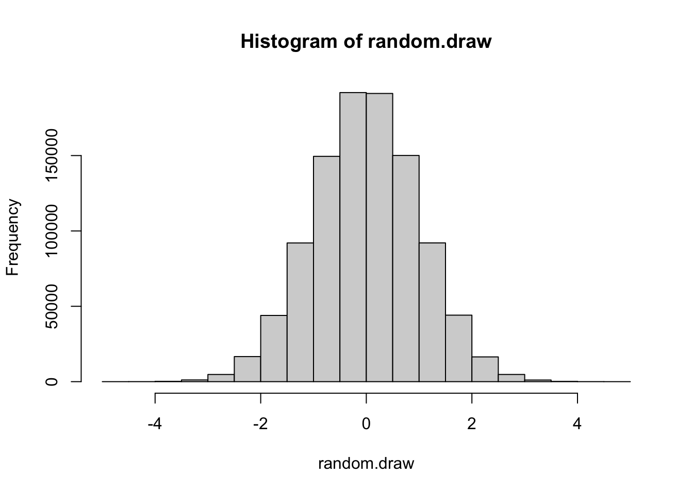

Initially we will us the R console for some very simple operations. It will allow you to familiarize yourself with the software and quickly make you a confident user.
For this exercise simply open up R. All you will see is the R Console window. Initially you can think of R as a very powerful calculator. So let us try a couple of things. Just type 4+4 and then enter
4+4## [1] 8I hope that you got the same result as above. Let us try another task:
4*4## [1] 16Okay, now you see that R can calculate numbers, but let us look at some functions. E.g. let us take the square root of 9. This is already a small example of running a function (in this case sqrt). Functions will become important as we go along.
sqrt(9)## [1] 3Another feature that is important in R, is the ability to generate numbers. This can be used for simulations or estimation. Sometimes it might just be useful to illustrate some theoretical concept. Let us consider two examples. First, let us randomly draw 20 values from a normal distribution, 20 values from a uniform distribution, and then 20 values from a binomial distribution:
rnorm(20, mean=0, sd=1)## [1] 0.002826832 0.134442019 0.863670505 -0.550428290 -0.613132092
## [6] 0.719699626 -0.682439866 -0.964305329 0.661161356 -0.422317277
## [11] 0.666731129 0.060640947 0.148039580 -1.606024824 0.537216554
## [16] -0.724661480 -1.016626644 -0.078000901 0.448256985 2.249224955runif(20, min=0, max=1)## [1] 0.4624941 0.2640971 0.1040135 0.3834171 0.8009351 0.7871035 0.8754635
## [8] 0.1892706 0.9698430 0.4080554 0.9161916 0.1749175 0.1663440 0.1234568
## [15] 0.1376365 0.1715761 0.3981696 0.3495021 0.8957720 0.2795688rbinom(20,size=1, prob=0.5)## [1] 0 0 0 1 0 1 1 0 0 1 0 0 0 1 1 1 1 0 0 0R is an object oriented programming languages. This means there is a focus on creating and manipulating objects. So let us go back to the examples above, but storing results as objects.
Let us start with 4+4 and assign the result to the variable x.
x <- 4 + 4We can then simply ask what is x?
x## [1] 8And manipulate x again:
x/2## [1] 4And create another variable y:
y <- x/2Here another example:
random.draw <- rnorm(20, mean=0, sd=1)
random.draw## [1] 1.55647681 -0.43525041 -0.57213818 -0.46257722 -2.38319442 -0.24125310
## [7] -1.39330829 -0.66942470 -0.39902522 -1.00880670 -0.25718754 0.88732807
## [13] -0.06436515 -0.38875807 0.84666930 -0.86633938 -0.19479899 0.26160203
## [19] 0.09642683 0.98981065We can of course also just input our own data. Let us imagine we have five countries:
country.names <- c("A","B","C","D","E")
country.names## [1] "A" "B" "C" "D" "E"And imagine each country has a democracy score between 0 and 10
country.democracy <- c(9,7,4,2,8)
country.democracy## [1] 9 7 4 2 8And some countries have been in war and some have not:
country.war <- c(0,0,1,1,0)
country.war## [1] 0 0 1 1 0We could now put this information into a new dataframe:
country.data <- data.frame(country.names,country.democracy,country.war)
country.data## country.names country.democracy country.war
## 1 A 9 0
## 2 B 7 0
## 3 C 4 1
## 4 D 2 1
## 5 E 8 0Great! We have created our first dataframe!
A great feature of R is its plotting abilities. This will be particularly important for plotting networks. But let us first start with some simple examples. Remember that above we drew from distributions. Now let us plot how this actually looks like. That is if we, e.g. randomly draw 20 times from a normal distribution, what does this distribution look like using a histogram:
random.draw <- rnorm(20, mean=0, sd=1)
hist(random.draw)
When you run this code a few times, you will sometimes get distributions that look pretty normal, but sometimes they certainly don’t. We can now test what happens when we draw more often from the normal distribution. In the example below, you will draw 1,000,000 times, but you can play with the code and see when you slowly increase this number.
random.draw <- rnorm(1000000, mean=0, sd=1)
hist(random.draw)
Remember the country.data we created above. This is a mock version of a very typical dataset. Imagine we wanted to plot the relationship between country.democracy and country.war. For example, we want to know whether a higher democracy score leads to more or less war.
country.data## country.names country.democracy country.war
## 1 A 9 0
## 2 B 7 0
## 3 C 4 1
## 4 D 2 1
## 5 E 8 0In a dataframe we can call a variable by using the $ sign.
country.data$country.democracy## [1] 9 7 4 2 8country.data$country.war## [1] 0 0 1 1 0We can now plot these two variables by stating:
plot(country.data$country.democracy,country.data$country.war)We will go through this in week 6 in much more detail, but I already wanted to highlight that one way to store network information is through matrices. Each entry in a matrix indicates whether or two which degree two units are connected. Imagine we again have our five countries “A”,“B”,“C”,“D”,“E” and wanted to represent, which country fought with each other. Let us imagine 0 stands for peace and 1 stands for war.
Let us first create a peaceful network through a matrix of filled of 0s. Because we have 5 countries it needs to have 5 rows and 5 columns. We also want to give the colums and rows names according to the countries.
conflict.matrix <- matrix(data=0,nrow=5,ncol=5)
conflict.matrix## [,1] [,2] [,3] [,4] [,5]
## [1,] 0 0 0 0 0
## [2,] 0 0 0 0 0
## [3,] 0 0 0 0 0
## [4,] 0 0 0 0 0
## [5,] 0 0 0 0 0colnames(conflict.matrix) <- c("A","B","C","D","E")
rownames(conflict.matrix) <- c("A","B","C","D","E")
conflict.matrix## A B C D E
## A 0 0 0 0 0
## B 0 0 0 0 0
## C 0 0 0 0 0
## D 0 0 0 0 0
## E 0 0 0 0 0Okay, so far very peaceful (all zeros). Let us create some entries that indicate war. Let us imagine that A and B, B and D, and A and D have been in war with each other. We can manipulate individual values in a matrix by selecting row and column number (matrix[row,column]) and assigning a new value:
#A<-B
conflict.matrix[1,2] <- 1
#B<-A
conflict.matrix[2,1] <- 1
conflict.matrix## A B C D E
## A 0 1 0 0 0
## B 1 0 0 0 0
## C 0 0 0 0 0
## D 0 0 0 0 0
## E 0 0 0 0 0#B<-D
conflict.matrix[2,4] <- 1
#D<-B
conflict.matrix[4,2] <- 1
conflict.matrix## A B C D E
## A 0 1 0 0 0
## B 1 0 0 1 0
## C 0 0 0 0 0
## D 0 1 0 0 0
## E 0 0 0 0 0#A<-D
conflict.matrix[1,4] <- 1
#D<-A
conflict.matrix[4,1] <- 1
conflict.matrix## A B C D E
## A 0 1 0 1 0
## B 1 0 0 1 0
## C 0 0 0 0 0
## D 1 1 0 0 0
## E 0 0 0 0 0